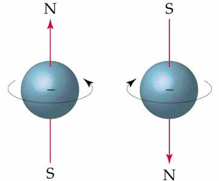

সহজ কথায় কোয়ান্টাম কম্পিউটার হল এমন একটা কম্পিউটার যেটা কোয়ান্টাম মেকানিক্সের বিভিন্ন ধর্মকে সরাসরি কাজে লাগিয়ে সব কাজ করে। আমার বর্তমানের গবেষণার বিষয়বস্তু কোয়ান্টাম কম্পিউটার, ন্যাশনাল ইউনিভার্সিটি অফ সিঙ্গাপুরের সেন্টার ফর কোয়ান্টাম টেকনোলজিতে ইন্টার্ন রিসার্চার হিসাবে কাজ করছি। কোয়ান্টাম কম্পিউটার নিয়ে পড়ালেখা করতে গিয়ে মনে হল এগুলো সম্পর্কে কিছু লেখা উচিত। কোয়ান্টাম কম্পিউটার নিয়ে অনেক লেখাই ইন্টারনেটে পাওয়া যায়, সেগুলোর কিছু সত্যিই ভালো হলেও বেশিভাগই ভুলে ভরা এবং অবাস্তব সব দাবী করা হয় সেগুলো তে। আমার লেখা রিভিউ করে ভুল-ত্রুটি দূর করতে সাহায্য করেছেন আমার সুপারভাইজর তানভীরুল ইসলাম যিনি একই জায়গার পিএইচডি করছেন।
এই লেখায় গাণিতিক অংশগুলো বিস্তারিত লেখা হবে না। কোয়ান্টাম কম্পিউটার কি, কিভাবে কাজ করে, কি করতে পারে বা কি করতে পারে না এগুলো সহজ ভাষায় জানানো এই লেখার উদ্দেশ্য। আমরা শুরুতে কিছু নতুন টার্ম শিখব।
কিউবিট:
আমরা যেসব কম্পিউটার ব্যবহার করি সেগুলো হলো ক্লাসিকাল কম্পিউটার। এখানে ০,১ দিয়ে সবকিছু হিসাব করা হয়, সার্কিটে নির্দিষ্ট মাত্রার ভোল্টেজের উপস্থিতি হলো ১, অনুপস্থিতি হলো ০। তাহলে ০,১ হলো ক্লাসিকাল কম্পিউটারে তথ্যের একক যাকে বলা হয় ‘বিট’। কোয়ান্টাম কম্পিউটারে তথ্যের একক হলো ‘কিউবিট’। সেই কিউবিট একটা ইলেকট্রণ হতে পারে, একটা আলোর কণিকা বা ফোটন হতে পারে, ডায়মন্ড বা অন্য কিছুর অণু হতে পারে। কোয়ান্টাম মানেই হলো কোন কিছু ক্ষুদ্রতম অংশ।
স্পিন এবং সুপারপজিশন:
কোয়ান্টাম লেভেলের এই কণিকাগুলো প্রত্যেকেই কিছু বিচিত্র আচরণ করে। প্রতিটি কোয়ান্টাম কণার একটা স্পিন থাকে, ক্লাসিক্যাল মেকানিক্সের স্পিন বা ঘুর্ণন থেকে এটা সম্পূর্ণ আলাদা। কিন্তু যেসব কণার স্পিন মান ১/২ তাদের ক্ষেত্রে, আমরা কণাটা ডান দিকে অথবা বামদিকে ঘুরছে এরকম কল্পনা করে নিতে পারি।

আমরা বোঝার জন্য সাদামাটা ভাবে ধরে নিলাম ডানে ঘুরলে কিউবিটের মান ১ আর বামে ঘুরলে কিউবিটের মান ০। এখন যে কেও ভাবতেই পারে এবার আমরা কম্পিউটারে অনেকগুলো কিউবিট আলাদা করে রেখে দিবো আর তাদের স্পিন মেপে ০ বা ১ বুঝবো, হয়ে গেল কোয়ান্টাম কম্পিউটার। আবার যেহেতু কণিকাগুলো জায়গা খুব কম নেয় তাহলে একটা ছোট কোয়ান্টাম হার্ডডিস্কে মিলিয়ন মিলিয়ন কিউবিট রেখে দিবো! কিন্তু মাপামাপির ব্যাপারটা এত সহজ না। একটা কিউবিট বামে বা ডানে না ঘুরে দুই দিকেই একসাথে ঘুরতে পারে! তারমানে কিউবিটে ০ বা ১ নেই, আছে দুটি মানের একটা মিশ্রণ! একে বলা হয় সুপারপজিশন। আমরা কল্পনাও করতে পারিনা কিভাবে একটা গোলক একইসাথে বামে বা ডানে ঘুরবে, কিন্তু বাস্তবে এটাই হচ্ছে।
আরো অদ্ভূত ব্যাপার হলো যেই আমরা সুপারপজিশনে থাকা কণিকাটা কোন দিকে ঘুরছে দেখার চেষ্টা করবো সাথে সাথে সে যে কোনো একদিকে ঘোরা শুরু করবে, কোন দিকে ঘুরবে আগে থেকে জানার কোন উপায় নেই। ধরা যাক আমি কিউবিটটাকে দেখার চেষ্টা করলে সেটা বামে ঘোরা শুরু করলো, এরপরে আরো ১০জন দেখার চেষ্টা করলেও বামেই ঘুরবে সেটা। কিন্তু তারমানে এই নয় আমি দেখার আগেই সে বামে ঘুরছিলো, এমন হতে পারে যে আমি দেখার পর ডানে ঘুরবে। কোনদিকে ঘুরবে সেটার “প্রোবালিটি” বা “সম্ভাব্যতা” আমরা বের করতে পারি, কিন্তু নিশ্চিত করে বলতে পারিনা। ব্যাপারটা এমন না যে আমরা মুর্খ, কম জানি তাই বের করতে পারিনা, আসলে গাণিতিক সমীকরণ দিয়ে প্রমাণ করে দেয়া যায় যে আগে থেকে জানা সম্ভব না।
এনট্যাঙ্গলমেন্ট এবং টেলিপোর্টেশন:
আরেকটা বিচিত্র ব্যাপার হলো এনট্যাঙ্গলমেন্ট। সহজ কথায় দুটি বিষয় একটা আরেকটার উপর পুরোপুরি নির্ভরশীল হলে আমরা বলতে পারি বিষয় দুটি এনট্যাঙ্গলড হয়ে আছে। পৃথিবী আর চাঁদের গতি একটা আরেকটার অভিকর্ষ বলের উপর নির্ভরশীল। তারপরেও আমরা চঁাদের কথা উল্লেখ না করেই পৃথিবীকে অবস্থান আর গতি দিয়ে চিহ্ণিত করে ফেলতে পারি, তাই বিষয়দুটি এনট্যাঙ্গলড না।
এখন ধরা যাক দুটি কিউবিট আছে A এবং B নামের। তারা এনট্যাঙ্গলড মানে হলো একটার প্রোপার্টি আরেকটার সাথে জড়িয়ে আছে। কিউবিট A কিভাবে ঘুরছে আমরা যেই দেখার চেষ্টা করবো সাথে সাথে কিউবিট B এর স্পিন নির্দিষ্ট হয়ে যাবে। আমরা A এর স্পিন মাপার আগে দুইজনই একইসাথে বামে আর ডানে ঘুরছিলো। যেই আমরা A কে দেখলাম সাথে সাথে A যেকোন একদিকে ঘোরা শুরু করে দিলো, আর তখনই B ও একসাথে দুইদিকে ঘোরার বদলে যেকোন একদিকে ঘোরা শুরু করবে। তারমানে একটা কিউবিটকে মাপার চেষ্টা করে আমরা আরেকটির দিক নির্দিষ্ট করে দিলাম। এখানে অবাক করার মত ব্যাপার হলো A আর B যদি ১০০০০ আলোকবর্ষ দূরেও থাকে তাহলেও এটা ঘটবে।
{kind=link}
এনট্যাঙ্গলমেন্ট ব্যাপারটা অবিশ্বাস্য হলেও কল্পনা না, বিজ্ঞানীর দুটি ল্যাবে বসে পরীক্ষা করে দেখেছেন সত্যিই এটা ঘটে থাকে। এনট্যা্ঙ্গলমেন্ট ব্যবহার করে কিউবিট “টেলিপোর্ট” করে দেয়া সম্ভব, তারমানে কণিকাটা বাতাস বা ভ্যাকুয়াম বা অন্য কোনো মাধ্যম দিয়ে না পাঠিয়েই জাদুর মত আরেকজায়গায় পাঠিয়ে দেয়া যায়।
তবে আইনস্টাইন বলেছিলেন আলোর গতিকে কখনো অতিক্রম করা যাবেনা, এদিকে আমি বলছি এনট্যাঙ্গলমেন্ট দিয়ে ১০০০০ আলোকবর্ষ কিউবিট দূরে টেলিপোর্ট করে দেয়া সম্ভব, তাহলে নিশ্চয় এটা ভূল। আসলে এনট্যা্ঙ্গলমেন্ট হাজার হাজার আলোকবর্ষ দূরে ঘটলেও কোন তথ্য চলে যায় না কারণ সবকিছু “সম্ভাব্যতা” অনুযায়ী হচ্ছে। টেলিপোর্ট করলে তথ্য পাঠানো যায়, কিন্তু সেক্ষেত্রে সেই তথ্য পড়ার জন্য কিছু সাধারণ বিট ও পাঠিয়ে দিতে হয় গন্তব্যে, সেটা আলোর গতি অতিক্রম করে না। তাই তথ্য এখানে আলোর গতি অতিক্রম করছেনা, সিনেমার মত টেলিপোর্ট করে নিমেষেই অন্য গ্যালাক্সিতে চলে যাবার আশা করে থাকলে হতাশ করতে হচ্ছে।
শুধুই গাণিতিক থিওরি?
জাদুর মত এই ব্যাপারগুলো যে শুধুই কাগজে-কলমে ঘটে না তার একটা প্রমাণ “ট্রানজিস্টর”, যার সাহায্যে কম্পিউটার, মোবাইল ফোন সহ হাজার রকমের যন্ত্রপাতি কাজ করে। কোয়ান্টাম মেকানিক্স নিয়েই গবেষণা করতে গিয়ে বিজ্ঞানিরা অনুমান করেছেন এই ধর্মগুলো ব্যবহার করে ট্রানজিস্টর বানানো সম্ভব, একসময় টেকনোলজীর উন্নতির পরে সেটা বানানো সম্ভবও হয়েছে।
এনট্যাঙ্গলম্যান্ট, টেলিপোর্টেশন এখন ল্যাবে খুব নিখুতভাবে পরীক্ষা করা যায়। আমি যেখানে কাজ করছি সেখানকার ল্যাবেও এগুলো করা হয়।
কোয়ান্টাম কম্পিউটার কি?
কোয়ান্টাম লেভেলের কণিকায় তথ্য সংরক্ষণ করা যায়, এদেরকে বলা হয় কোয়ান্টাম ইনফরমেশন। এনট্যাঙ্গলমেন্ট, টেলিপোর্টেশন, সুপারপজিশন ইত্যাদি ধর্ম ব্যবহার করে তথ্য আদান-প্রদান, হিসাব নিকাশ করা সম্ভব। কোয়ান্টাম কম্পিউটারে সব গণনা এভাবেই করা হয়। কোয়ান্টাম কম্পিউটারে এমন অনেক কাজ করা যায় যেগুলো সাধারণ কম্পিউটারে করা যায় না। যেমন পলিনমিয়াল টাইমে প্রাইম ফ্যাক্টরাইজেশন বা লিনিয়ার সার্চের কমপ্লিক্সিটি স্কয়ার রুট এ নামিয়ে নিয়ে আসা, রাসায়নিক বিক্রিয়া সিমুলেট করা ইত্যাদি।
কিন্তু এখনো কোয়ান্টাম কম্পিউটার ল্যাবে তৈরি করা যায় নি। গুগলের কেনা ডি-ওয়েভকে কোয়ান্টাম কম্পিউটার দাবী করা হলেও বেশিভাগ বিজ্ঞানীরা মনে করেন কোয়ান্টাম কম্পিউটার হবার সবগুলো শর্ত ডি-ওয়েভ পূরণ করে না। অনেক লেখাতে দাবী করতে দেখেছি কোয়ান্টাম কম্পিউটার গতির ঝড় তুলবে, অনেকে বলে np-complete সমস্যা সমাধান করতে পারবে। এসব দাবীর কতটা সত্যি আর কতটা কল্পনা, কি কাজে লাগবে কোয়ান্টাম কম্পিউটার, কোয়ান্টাম কম্পিউটার তৈরির বাধা কোথায়, এসব নিয়ে আলোচনা হবে পরের পর্বে।

ফেসবুকে মন্তব্য
Powered by Facebook Comments